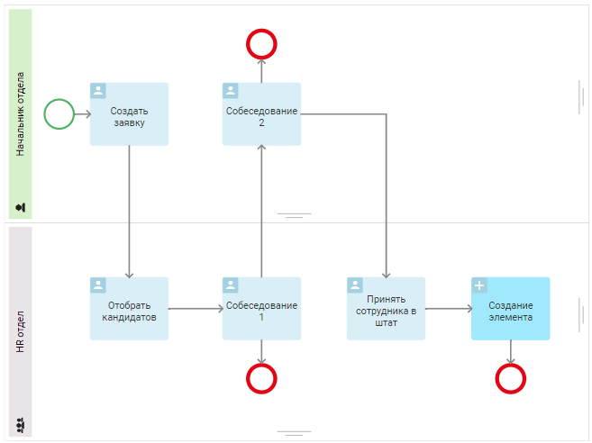
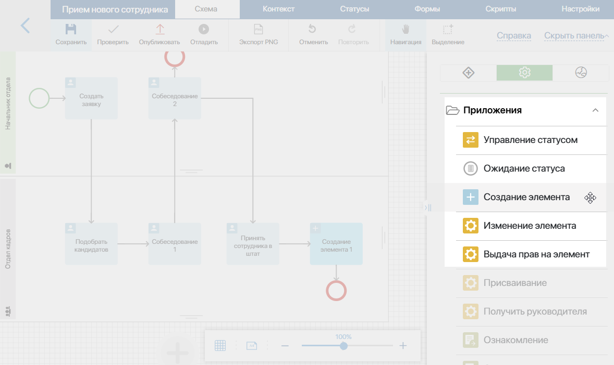
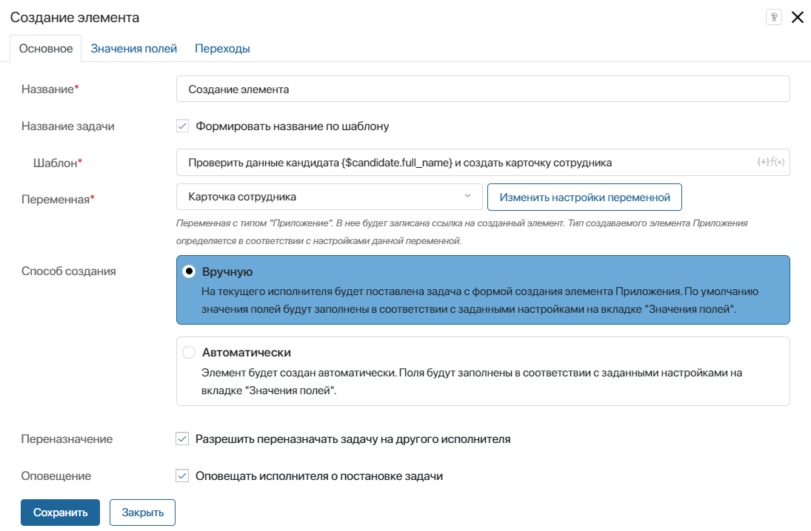
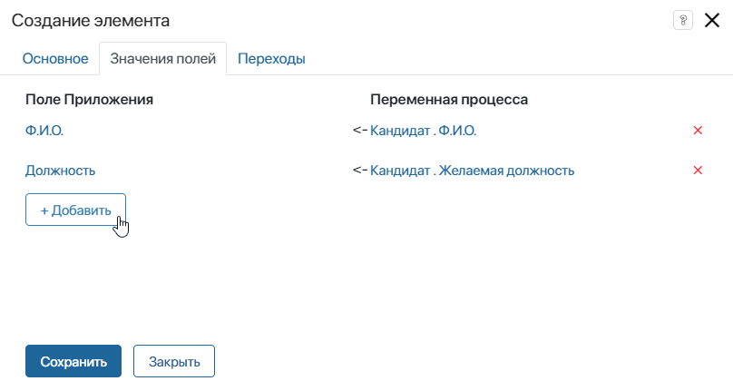
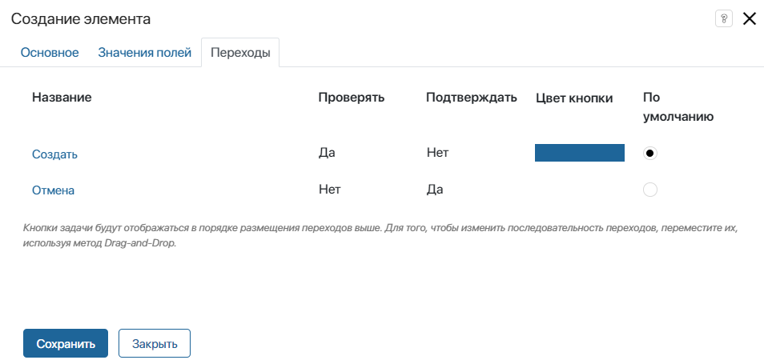

Блок Создание элемента позволяет создать новый элемент приложения в ходе выполнения бизнес‑процесса. В зависимости от настроек блока, элемент может создаваться вручную пользователем или автоматически.
Блок Создание элемента позволяет создать новый элемент приложения в ходе выполнения бизнес‑процесса. В зависимости от настроек блока, элемент может создаваться вручную пользователем или автоматически.
Для примера рассмотрим процесс приёма нового сотрудника. Кандидат проходит собеседования, а затем специалист HR‑отдела принимает его в штат компании. По завершении процесса в приложение Сотрудники добавляется новый элемент, содержащий данные о кандидате, которые были внесены в систему во время выполнения процесса.

Настройка блока
Откройте страницу процесса. На панели инструментов справа от поля для моделирования перейдите на вкладку Системные элементы. Перетащите блок Создание элемента на схему и разместите его там, где при исполнении процесса потребуется создать новый элемент приложения.

Чтобы открыть окно с настройками, дважды нажмите на добавленный блок на схеме процесса.
Вкладка «Основное»
В открывшемся окне заполните поля:

- Название* — введите название блока, которое будет отображаться на схеме процесса;
- Название задачи — включите опцию Формировать название по шаблону, чтобы добавить контекстные переменные в название, которое исполнитель увидит в списке задач и в карточке задачи;
- Шаблон* — в правом углу поля нажмите значок {+} и выберите переменную. Также можно добавить условия и функции для формирования названия элемента по шаблону. Это позволит сгенерировать более информативное название.
Если данная опция не используется, то в списке задач и на форме отобразится текст, указанный в поле Название*.
- Переменная* — укажите контекстную переменную, которая будет ссылаться на элемент приложения.
Если переменная уже существует в контексте бизнес-процесса, вы сможете выбрать её из выпадающего списка. Чтобы изменить название переменной и добавить подсказку, нажмите на кнопку Изменить настройки переменной.
Если переменная ещё не задана в контексте процесса, нажмите на кнопку Создать новую переменную. Обратите внимание, в блоке Создание элемента всегда используются переменные типа Приложение;
- Способ создания — укажите, как будет создаваться элемент:
- Вручную — исполнителю зоны ответственности, в которой расположен блок, назначается задача с формой создания элемента. Поля в задаче заполнены данными, которые сотрудники вносили во время выполнения процесса. Пользователь может отредактировать эти данные, прежде чем завершить задачу и сохранить элемент. Также он может отменить создание элемента, если для блока настроен соответствующий переход.
Если в зоне ответственности указана группа, задача создания элемента назначается всем сотрудникам, входящим в эту группу. Как только кто‑то берёт задачу в работу, она исчезает из списка задач остальных исполнителей;
- Автоматически — элемент создаётся автоматически, а все поля заполняются данными в соответствии с настройками, указанными на вкладке Значения полей.
- Переназначение — опция отображается, если выбран способ создания Вручную. Включите её, чтобы исполнитель задачи мог переназначить её на другого пользователя;
- Оповещение — опция отображается, если выбран способ создания Вручную. Выберите её, чтобы исполнитель задачи получил в #ленту уведомление о её назначении. Чтобы на электронную почту исполнителя отправлялось дополнительное уведомление о задаче, он может включить в настройках профиля опцию отправки оповещений о новых задачах на email.
Вкладка «Значения полей»
Вкладка появляется после выбора переменной на вкладке Основное.

Здесь необходимо указать поля, которые будут заполняться автоматически при создании элемента. Нажмите кнопку + Добавить и выберите поле из списка полей приложения. Затем сопоставьте поле с соответствующей контекстной переменной. При исполнении процесса поле приложения будет заполнено данными, хранящимися в этой переменной.
Типы полей приложения должны совпадать с типами контекстных переменных процесса.
Вкладка «Переходы»

Вкладка доступна при выборе способа создания элемента Вручную.
Здесь можно настроить исходящие переходы блока, которые будут отображаться для пользователя как кнопки в задаче создания элемента.
Начало внимание
У блока Создание элемента может быть только два исходящих перехода: для сохранения элемента и для отмены его создания. Отметьте опцию По умолчанию для перехода, по которому элемент должен сохраниться.
Конец внимание
Также на этой вкладке можно изменить названия кнопок, добавить текст подтверждения, выбрать цвета и т. д. Чтобы перейти к настройкам, нажмите на название перехода. Подробнее читайте в статье «Переходы».
После того как вы указали все параметры, нажмите Сохранить.